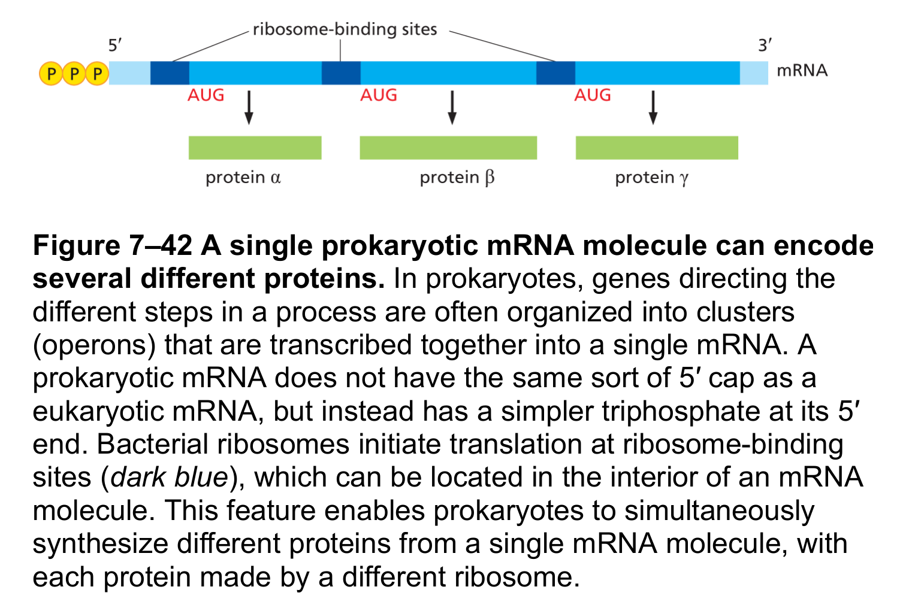
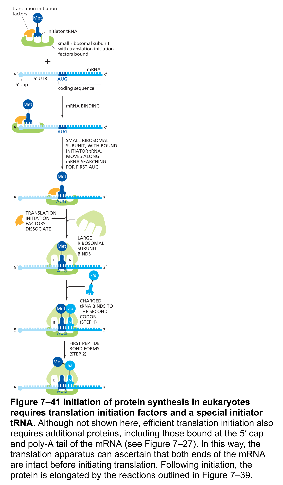
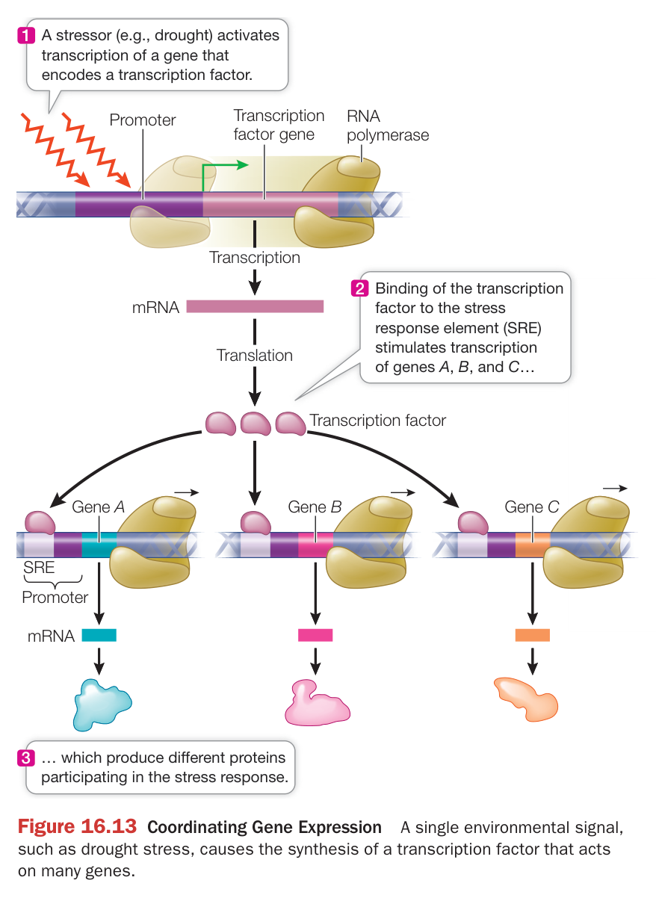
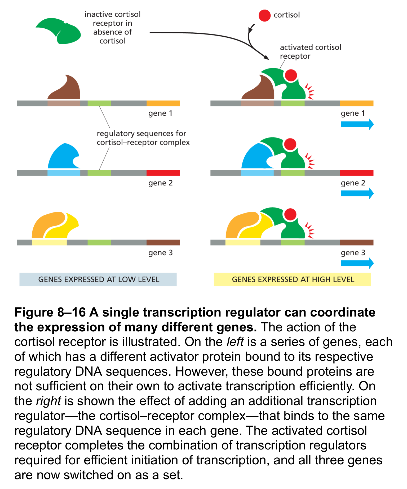
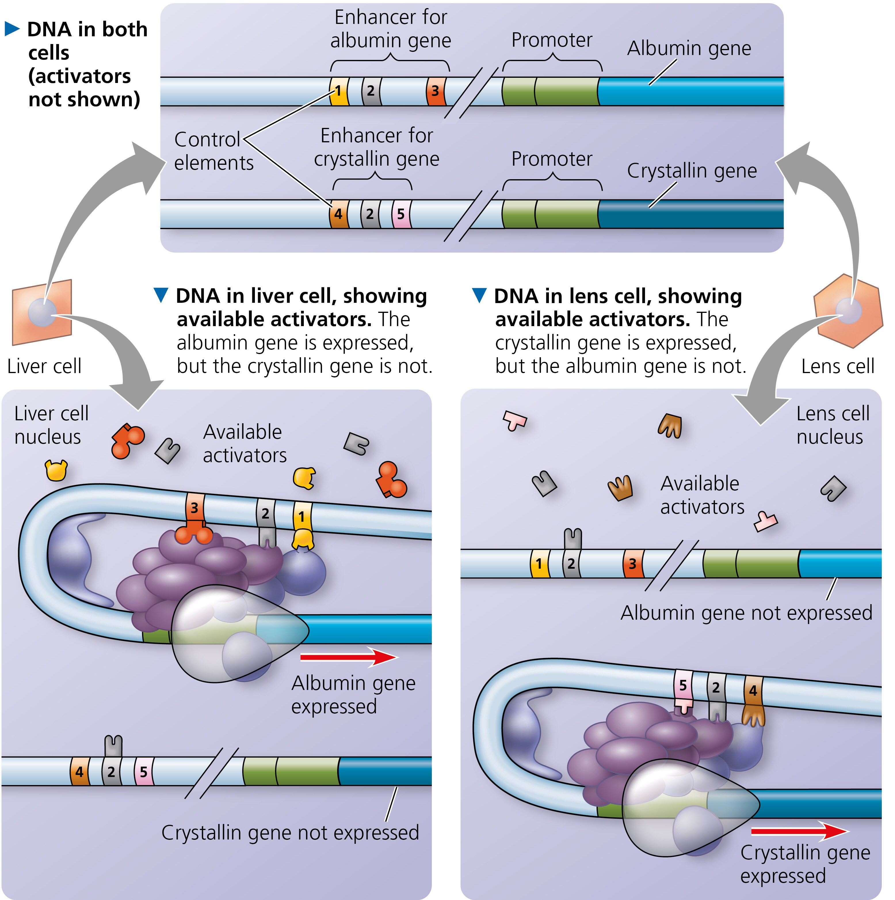
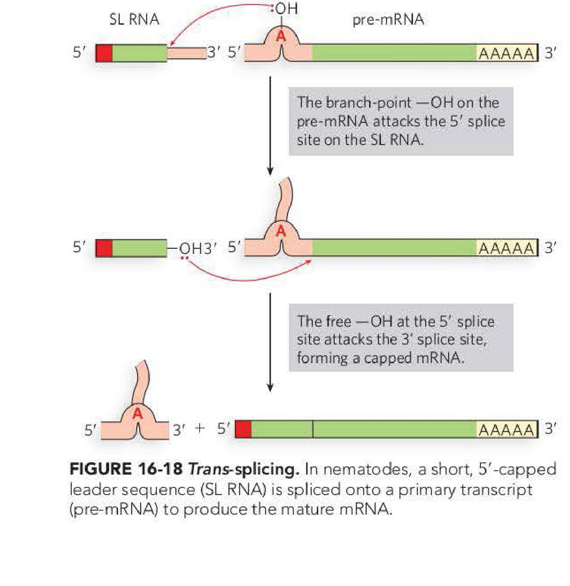

為什麼真核細胞幾乎沒有操縱組？
從「真核核糖體只認 5′ 端帽」的轉譯硬限制、分散各染色體的「無線遙控＋密碼鎖」協調調控，到線蟲靠反式剪接「補貼帽子」的絕妙反證。
真核細胞的核基因是「幾乎沒有」細菌式操縱組（但並非 100% 零例外——線蟲 C. elegans 與內共生胞器葉綠體就是精彩例外）。絕大多數真核細胞不採細菌式操縱組，背後有三個關鍵原因：
細菌核糖體能從多順反子 mRNA 中間的多個核糖體結合位空降起跑；真核核糖體卻仰賴最前端的 5′ 端帽往下掃描找第一個 AUG。如果把三個基因串在同一條 mRNA，只有第一個基因有帽子能被有效轉譯（Weaver 5e；Alberts ECB6；Lodish 9e）。
真核不需把相關基因硬塞在同一段 DNA，只要讓散落在不同染色體的基因各自裝上相同的調控元件／回應元件，單一轉錄活化蛋白（如類固醇激素受體、熱休克因子）就能同時開啟整組基因（Campbell 13e；Alberts ECB6；Sadava 12e）。
多細胞生物有數百種分化細胞，靠獨立啟動子與強化子的組合式調控才能自由排列搭檔；加上真核細胞體積較大、隨機生化波動影響較小，也更不需靠操縱組綁死多個基因（Campbell 13e；Pierce 7e）。
01 最硬的分子限制：真核核糖體只認 5′ 端帽，讀不了多順反子 mRNA
很多同學直覺以為，把同一條代謝路徑的 3 個基因排在一起共用 1 個啟動子很省事，為什麼人類細胞不這樣做？答案最直接的卡關點就在核糖體尋找起始密碼子（AUG）的方式：
| 比較項目 | 原核細胞（細菌） | 真核細胞（絕大多數核基因） |
|---|---|---|
| 典型 mRNA 類型 | 多順反子 mRNA（一條編碼多種蛋白質） | 單順反子 mRNA（一條只編碼一種蛋白質） |
| 核糖體怎麼找起點？ | 每個編碼區前面都有獨立的核糖體結合位（Shine–Dalgarno 序列），核糖體可直接從 mRNA 中間結合起跑 | 核糖體小次單元必須先辨認 mRNA 最前端的 5′ 端帽（5′ cap），再沿 5′ → 3′ 方向掃描找第一個 AUG |
| 如果把 3 個基因串成 1 條 mRNA？ | 3 個基因各有停靠點 → 3 種蛋白質都能順利同時轉譯 | 只有最前面的第 1 個基因有 5′ 端帽 → 後面 2 個基因幾乎無法有效轉譯 |

🔍 點擊圖片可全螢幕放大
🔍 點擊圖片可全螢幕放大02 更好的替代方案：把「延長線」升級成「無線遙控器＋密碼鎖」
細菌把相關基因排在同一段 DNA 上組成操縱組，就像把幾台電器插在同一條延長線上共用總開關。那真核細胞沒有操縱組，怎麼同時打開散落在不同染色體上的相關基因？
真核細胞靠的是「共用調控元件／回應元件」加上「組合式調控」——就像幫分散在不同房間的電器裝上同一頻率的無線遙控接收器，而且還升級成密碼鎖（Campbell 13e Ch. 18；Alberts ECB6 Ch. 08；Sadava 12e Ch. 16）：
- 植物乾旱逆境（圖 3）：面對缺水時，植物必須同時開啟多個保護基因；這些基因散布在全基因體各處，但只要啟動子旁都帶有一段共同的逆境反應元件（SRE），同一個轉錄因子就能同步啟動基因 A、B、C（Sadava 12e Ch. 16）。
- 人類皮質醇與雌激素（圖 4）：類固醇激素與受體結合進核後，同時結合多個分散基因的激素回應元件，宛如幫多把密碼鎖同時輸入最後一個號碼，讓整組基因同步開啟（Alberts ECB6 Ch. 08；Campbell 13e Ch. 18）。
- 多細胞分化的組合彈性（圖 5）：肝細胞與眼睛水晶體細胞明明帶著完全相同的 DNA，但白蛋白基因和晶體蛋白基因各有獨立啟動子與含不同元件組合的強化子（enhancer）——肝細胞只開白蛋白、水晶體細胞只開晶體蛋白（Campbell 13e Fig. 18.12）。如果把基因硬綁死在操縱組裡，反而喪失這種隨組織自由排列搭檔的彈性。
- 細胞體積與生化噪音假說（演化觀點）：Pierce Genetics 7e Ch. 16 指出（Igoshin & Ray 模型），細菌體積小、分子數少，把基因串成操縱組能降低轉錄轉譯的隨機波動噪音；真核細胞體積大得多，隨機波動影響較小，且已演化出染色質結構改變與核內轉錄工廠等耦聯機制，因此更不需要操縱組。

🔍 點擊圖片可全螢幕放大
🔍 點擊圖片可全螢幕放大
🔍 點擊圖片可全螢幕放大03 絕妙反證彩蛋：少數真核生物真的有操縱組——靠「反式剪接」補貼帽子！
生物學裡最迷人的時刻，往往是例外反過來證明了規則：
- 秀麗隱桿線蟲（C. elegans）等蠕蟲與少數原始脊索動物：在秀麗隱桿線蟲的細胞核裡，確實有超過 15% 的 mRNA 是來自 2～8 個基因排在一起、由單一啟動子控制的「類操縱組」（Weaver 5e Ch. 16；Pierce 7e Ch. 17）。但線蟲怎麼讓真核核糖體讀到後面第 2 到第 8 個基因？它靠的是反式剪接（trans-splicing）——先在細胞核裡把多順反子前驅 mRNA 切開，再把一段自帶 5′ 端帽的短前導序列（SL RNA）一一貼到每個基因的前端，加工成各自有帽子的單順反子 mRNA 才送去轉譯（圖 6）！
- 真核細胞內的半自主胞器（葉綠體與粒線體）：因為源自古老的內共生細菌（見 內共生假說與演化序列），植物葉綠體 DNA 至今仍以類似細菌的多順反子操縱組表現許多基因（Lodish 9e Ch. 12；Stryer 10e Ch. 19），粒線體也會產生大型多順反子轉錄本（Becker 10e Ch. 20）。

🔍 點擊圖片可全螢幕放大04 經典英文原文教科書逐句考證
以下所有英文原文均原封不動回溯自 Ze-Agent Vault 正式譯本，提供高中教師備課、教甄申論與同學深度溯源。
[Ch. 12] "Chloroplast DNAs encode the subunits of a bacteria-like RNA polymerase, and they express many of their genes from polycistronic operons, in which multiple proteins are translated from a single messenger RNA, as in bacteria."
[Ch. 12] 葉綠體 DNA 編碼類似細菌的 RNA 聚合酶次單元，並像細菌一樣從多順反子操縱組表現許多基因。
[Sadava Ch. 16] "Under conditions of drought stress, a plant must simultaneously synthesize several proteins whose genes are scattered throughout the genome. To coordinate expression of the stress response, each of the associated genes has a specific regulatory sequence near its promoter called the stress response element (SRE)."
[Sadava] 植物乾旱逆境下，散布在基因體中的多個基因各自在啟動子旁共享逆境反應元件（SRE），受同一轉錄因子同步啟動。
[Ch. 17] "Although some operon-like gene clusters have been found in worms and even in some primitive chordates, most eukaryotic genes have their own promoters and are transcribed separately. Second, chromatin structure affects gene expression in eukaryotic cells... Third, the presence of the nuclear membrane in eukaryotic cells separates transcription and translation in time and space."
[Ch. 17] 雖然在蠕蟲甚至某些原始脊索動物中發現類似操縱組的基因簇，但大多數真核基因各有獨立啟動子、分別轉錄，並受染色質結構與核膜時空分隔影響。
05 高中教學、常見陷阱、教甄實戰與查證邊界
第一步先拋硬限制：「真核核糖體只認最前面的 5′ 端帽，把 3 個基因串一起，後面 2 個沒人讀」→ 第二步講替代方案：「細菌用延長線（操縱組），真核升級成無線遙控器＋密碼鎖（強化子與共用調控元件）」→ 第三步丟彩蛋：「線蟲之所以能有操縱組，正是靠反式剪接幫後面每個基因補貼 5′ 端帽！」
常見命題陷阱與系列延伸閱讀
- 陷阱 1：「操縱組普遍存在於原核細胞和真核細胞中」→ 錯（115 陽交附中教甄第 7 題選項 C 直接考此點）。
- 陷阱 2：「真核細胞完全不存在任何多順反子或操縱組」→ 過於絕對。精準說法為「絕大多數真核核基因不採用細菌式操縱組（除線蟲等少數經反式剪接加工之例外，以及源自內共生細菌之葉綠體操縱組）」。
- 操縱組三部曲延伸閱讀： ① 操作子會不會被轉錄與轉譯產生蛋白質？（基因 vs. 子）； ② 大腸桿菌怎麼知道環境中有沒有葡萄糖與乳糖？； ③ Pierce 操縱組推論過程（Jacob–Monod 順／反式推理）； 另見 真核啟動子、TATA 匣與甲基化 與 內共生假說與演化序列。
本頁所有核心機制（5′ 端帽掃描 vs. 細菌內部核糖體結合位、分散基因共用調控／回應元件、組合式密碼鎖模型、Igoshin & Ray 細胞體積與生化噪音假說、線蟲 15% 操縱組與反式剪接補帽、蠕蟲與原始脊索動物例外、葉綠體多順反子操縱組）皆有上述 8 部原文書正典直接支持。經全面檢索確認，演化生物學文獻中常見的「自私操縱組假說（Selfish operon model, Lawrence & Roth 1996）與水平基因轉移解釋」，以及具名討論「尾海鞘（Oikopleura）／海鞘（Ciona）操縱組」或「錐蟲全基因體多順反子轉錄」之專段，目前在 Vault 譯本中查無直接記載，故未列為主幹。另 trans-splicing 於臺灣教育部《生命科學名詞》TSV 查無詞條，依 Vault 譯本統一譯為「反式剪接」；enhancer 依審定規範統一譯為「強化子」。